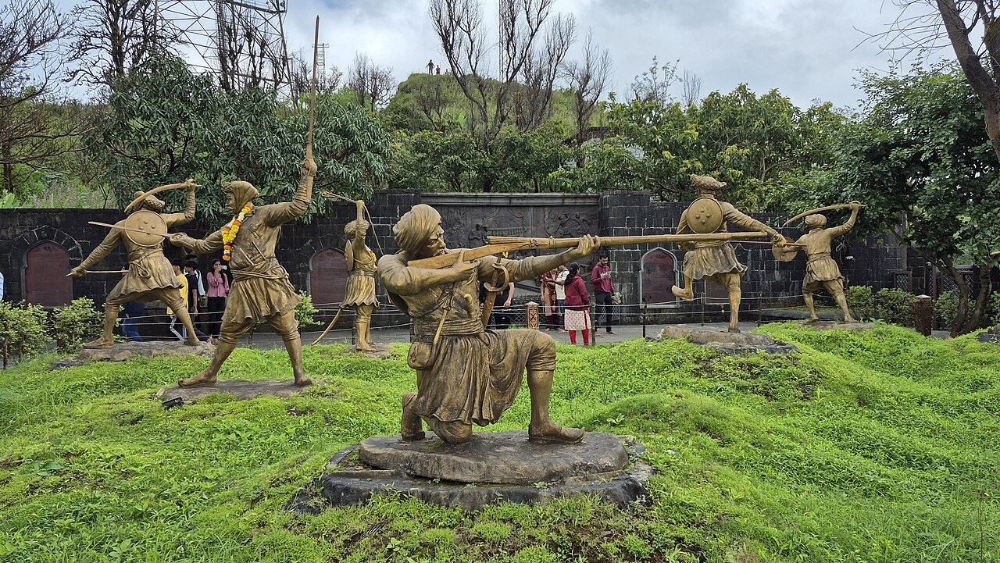

The alarm went off at four, and for a full minute I tried to talk myself out of it. Rain was hammering the window. My friends had already sent three messages, the last one just a photo of a packed raincoat, so that was that.
Every Pune student has climbed Sinhagad at least once, usually on a sunny Sunday with half the city for company. I had done that too. What I had never done is go in the first proper rain of the season, when the hill is at its greenest and most people are still asleep.
The climb
We parked at the base village while it was still dark and started up the old footpath by torchlight. For the first half hour there was nothing to see but wet rock and the back of my friend's shoes. Then the sky turned grey, and the valley appeared below us a piece at a time.
The path is steep in places, and in the rain it turns into a small stream. We slipped often and laughed about it every time. A group of college boys overtook us while singing, then we overtook them when they stopped to catch their breath.
By the time we reached the top, the fort had disappeared into a cloud and we were standing inside it.
Inside the cloud
Sinhagad is famous for the story of Tanaji Malusare, who scaled these walls at night in 1670 to win the fort back for Shivaji Maharaj. I must have heard that story fifty times at school. It feels different when you stand at the same edge, soaked through, and try to imagine climbing it in the dark.

We walked along the wall without talking much. Every few minutes the wind would open a gap in the cloud, show us a green slope far below, and close it again.
The reason everyone really comes
Let's be honest about the food. There is no better meal in Maharashtra than hot kanda bhaji, pithla bhakri and a clay pot of cold dahi, eaten under a tin roof with rain dripping off your hood. The stall owner gave us a look that said we were mad to be there so early, and then brought a second plate of bhaji without being asked.
We came down slowly, and passed the first crowds heading up just as our legs began to complain. They asked us if the view was good. We told them there was no view at all, and that they should definitely keep going.
Neha K.
13 July 2026
The clay pot of dahi after a wet climb is unbeatable. Going next weekend because of this post.
Rohan
14 July 2026
Did you take the path from Atkarwadi? I found it very slippery last year, so good shoes really do matter.